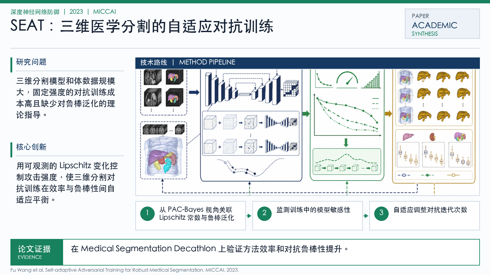

Problem
解决的问题
三维分割模型和体数据规模大，固定强度的对抗训练成本高且缺少对鲁棒泛化的理论指导。
Defense on DNNs · 2023 · MICCAI
Self-adaptive Adversarial Training for Robust Medical Segmentation
Problem
三维分割模型和体数据规模大，固定强度的对抗训练成本高且缺少对鲁棒泛化的理论指导。
Value
在 Medical Segmentation Decathlon 上验证方法效率和对抗鲁棒性提升。
Paper-grounded Academic Summary
该代表页依据原文摘要、贡献段与方法图注生成。方法视觉由 ImageGen 按论文证据逐篇绘制，中文研究问题、技术路线、创新点与实验结论采用确定性排版，以保证内容与字符准确。
打开原文 PDF
Technical Route
Innovation